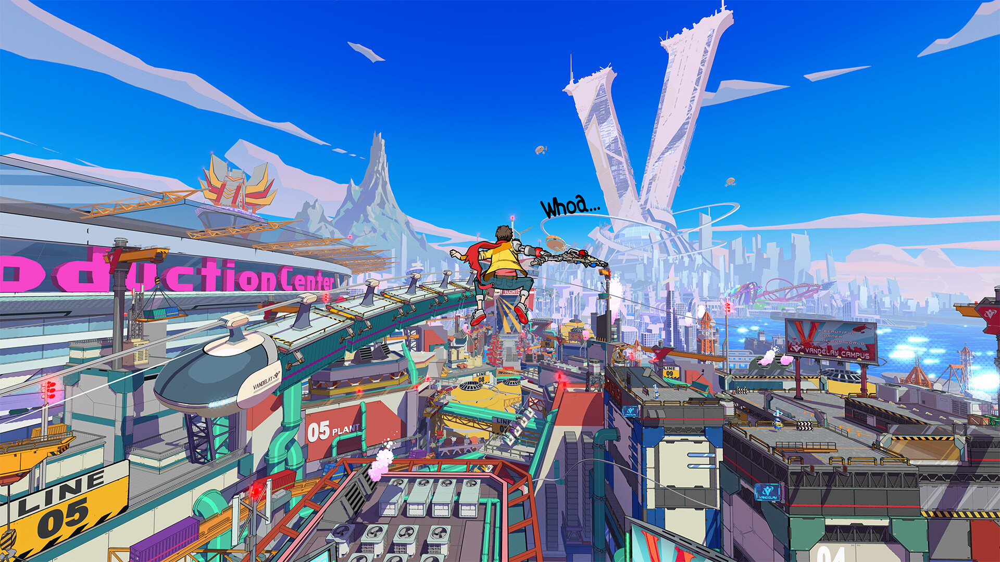

Que un videojuego de un estudio como Tango Gameworks aparezca de la nada y se lance el mismo día de su anuncio es algo que, como mínimo, resulta sorprendente, especialmente si tenemos en cuenta lo habituados que nos tienen las compañías a extenuantes campañas de marketing que se alargan durante años para promocionar sus producciones antes de que lleguen a las tiendas. Pero si encima ese juego es tan divertido, original y fresco como Hi-Fi Rush, la sorpresa inicial pasa a convertirse en una de las mayores alegrías que nos hemos llevado como jugadores en muchísimo tiempo. Y todo ello por no hablar de que su estreno directo en Xbox Game Pass ha facilitado que millones de jugadores hayan podido disfrutarlo desde un primer momento sin costes adicionales. ¿El resultado? Uno de los primeros bombazos de 2023 y toda una oda a la música y los videojuegos que derrocha calidad y personalidad por los cuatro costados.
La historia de esta nueva aventura de acción y plataformas nos pone en la piel de Chai, un alocado joven que sueña con ser algún día una estrella del rock. Sin embargo, tras un extraño accidente, su corazón acaba siendo sustituido por un reproductor de música que le da poderes a su brazo robótico cuando se mueve al ritmo de los temas que suenan en su lista de reproducción. Por desgracia para él, esto provoca que sea considerado como un producto defectuoso del que una gran corporación se quiere deshacer, lo que da pie a una frenética odisea en la que tendremos que enfrentarnos a multitud de robots y peligros para sobrevivir.
Como podréis suponer por esta sinopsis, el guion no se toma en serio a sí mismo ni un solo instante y se limita a ser una simple excusa para justificar nuestras idas y venidas mientras nos deleita con todo un recital de bromas y situaciones disparatadas. Es precisamente aquí donde encontramos uno de sus grandes puntos fuertes, ya que el sentido del humor del que hace gala toda la aventura es fantástico y no deja títere con cabeza. No solo podéis esperar infinidad de parodias a juegos, películas, series y memes, sino también mucha crítica social y un elenco de protagonistas brillante y con un carisma arrollador que no deja de romper la cuarta pared de formas muy ingeniosas e inesperadas.
Sumadle unas secuencias de vídeo divertidísimas, dirigidas con muchísimo estilo y con una factura técnica impecable que nada tiene que envidiar a lo que esperaríamos ver en una película de animación, y entenderéis que nos hayamos pasado las 10 horas que dura la trama principal con una sonrisa de oreja a oreja en la cara disfrutando de todas sus locuras. Golpes a todo ritmo
En lo puramente jugable nos encontramos ante una aventura de acción muy clásica y con un delicioso aroma que nos ha recordado muchísimo y en el buen sentido al tipo de juegos que se popularizaron durante la generación de los 128 bits. Su propuesta es muy sencilla: avanzar por una serie de niveles lineales mientras se van intercalando combates en arenas cerradas con secciones de plataformas tanto en 3D como en 2D. Por el camino también nos esperan montones de coleccionables e ítems de mejora ocultos, algunas secuencias QTE e ingentes cantidades de piezas que podemos intercambiar en la tienda por nuevos movimientos, técnicas especiales, objetos y chips que nos otorgan ventajas pasivas.
Ahora bien, hay un factor clave que hace que Hi-Fi Rush destaque y resulte en una obra muy especial: el ritmo. Absolutamente todo en este juego se mueve al ritmo de la música, lo que incluye las animaciones de Chai y los enemigos, la forma en la que se comportan las plataformas y hasta los mismísimos escenarios. Esto crea un contagioso ambiente festivo que, más allá del buen rollo que transmite, nos acaba metiendo el ritmo en el cuerpo, ayudándonos de manera muy visual a seguir el compás y a medir los tiempos.
Si bien el plataformeo es entretenido y el diseño de niveles se esfuerza por ser variado, es en las batallas cuando más brilla. En ellas dispondremos de un sistema de control muy sencillo que nos permite ejecutar una buena variedad de combos combinando golpes débiles y fuertes. Los primeros se ejecutan en tan solo un tiempo, mientras que los segundos necesitan de dos para realizar la animación completa, algo que tenemos que tener muy en cuenta si queremos sincronizar nuestras acciones con la música.
Aquí conviene destacar que, independientemente de lo bien o mal que llevemos el ritmo, nuestro héroe siempre se va a mover al compás, aunque si somos capaces de pulsar los botones al son de las canciones aumentaremos nuestro daño y nuestra puntuación final, por lo que aporrear el mando a lo loco resulta contraproducente.
Puntos positivos
- El estilazo que derrocha en lo visual y lo sonoro. Sus personajes y su sentido del humor.
- Todo lo relacionado con sus combates: divertidísimos.
- Altamente rejugable y con muchos contenidos tras los títulos de créditos.
Puntos negativos
- El plataformeo, sin ser malo, está un par de peldaños por debajo de los combates.
- Ciertos QTE durante los momentos de exploración.
- El diseño de niveles a veces tiende a repetir ciertos esquemas y secciones muy parecidas.
Conclusión
Hi-Fi Rush combina con asombroso acierto la intensidad y la profundidad de un hack'n slash con la exigente precisión de un juego de ritmo, logrando una experiencia fresca y vibrante en la que cada combate es una inyección de adrenalina.